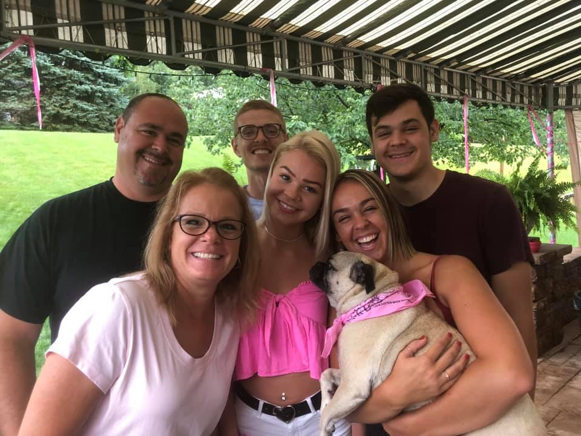
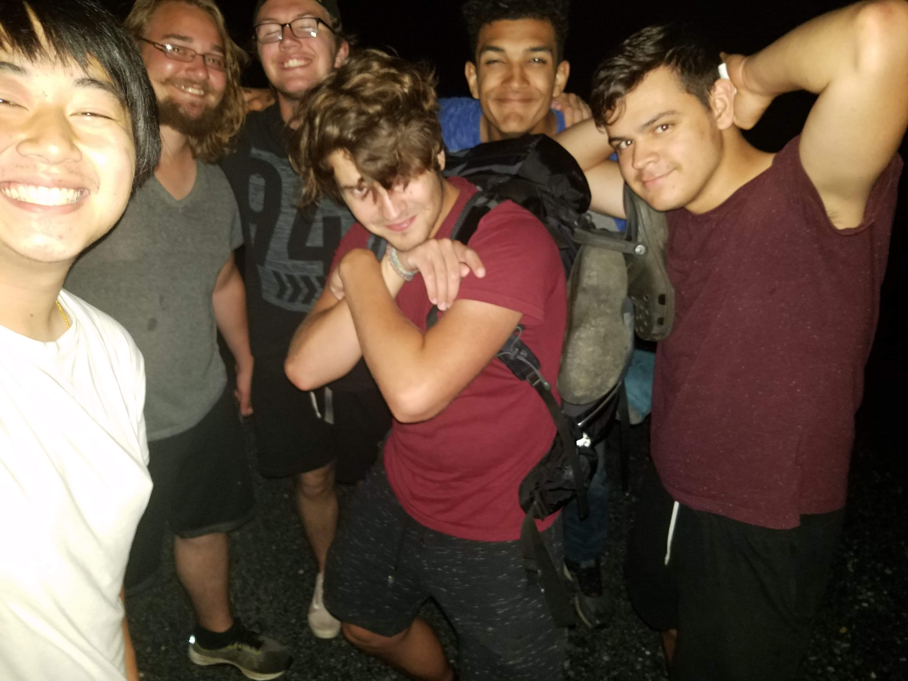
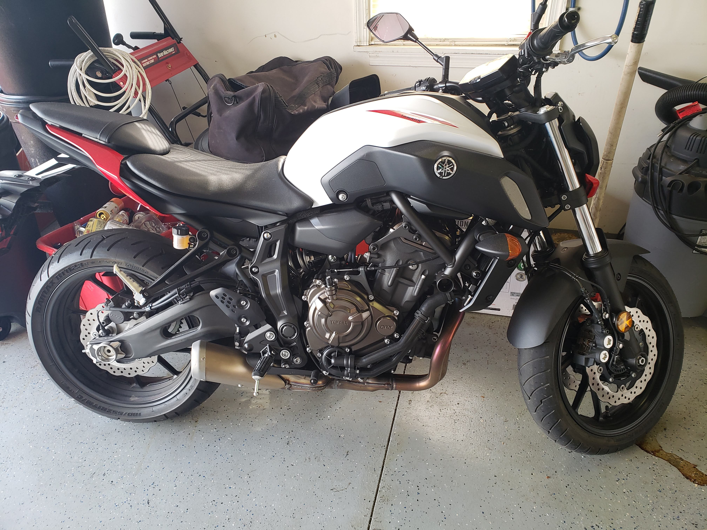

Hello my name is Cody, welcome to my personal website! I have been loving my journey learning web development at Thaddeus Stevens College of Technology. We are halfway through just the first semester and I'm excited to keep learning more.
My Family
I am a middle child of three with one older sister and one younger. I am the first out of my family to go to any college, and I think I might be the first in my bloodline to go into this sort of field. I make this assumption because my moms side of the family is Amish and my dad's is Mennonite, if you dont know what I'm talking about lets just say its far from any technology.
My Friends
These are my friends, some of us met in our beginning years of elementary school and others in middle or highschool. As a group we all love traveling but we are also poor. So we instead of flying places we drive there. So far, we've done 2 trips 1 from our home in PA to California, and another to Canada.
My Motorcycle
At the start of one summer I got what some call the "motorcycle bug", that is when all you can think about is buying and riding a 2 wheeled vehicle. So I bought myself a 2018 Yamaha MT-07 and taught myself how to ride and I love it.